Introduction - AIR CONDITIONING CASING AND COMPONENTS
- Path
- Descriptions > 50 AUXILIARY UNITS > 5040 AIR CONDITIONING CASING AND COMPONENTS > Introduction - AIR CONDITIONING CASING AND COMPONENTS
- Kind
- system description
- Applies to
- all engines; all production periods
- Interactive page
- https://sloeber94.github.io/elrnDB-a156/en/#/3239223
Applies to: all engines; all production periods; only with equipment: Air Conditioner
GLOSSARY
Climate control system
Fully automatic system for adjusting ventilation, heating and air conditioning. The system uses an extremely sophisticated system to maintain a preset temperature inside the car, regardless of outside weather conditions.
LEDs
The LED code (Light Emitting Diode) is used for particular diodes capable of emitting light at a certain wavelength when a low voltage electric current passes through.
Recirculation
This function of the ventilation system makes it possible to recirculate the same air in the passenger compartment, preventing the intake of outside air. It is a very useful function because it makes it possible to exclude the intake of undesired outside air into the passenger compartment (fumes, air polluted by driving in traffic, etc.).
Heat exchanger
This device has been designed (with a relatively low volume compared with heat exchange surfaces) to allow the flow of heat from a fluid at a higher temperature to another fluid at ambient temperature.
NTC sensor
Negative temperature coefficient resistance. Sensor resistance alters as the temperature changes. More specifically, it drops as temperature increases.
Presentation
The climate control system fitted to the car automatically controls the temperature, ventilation and distribution of air with a recirculation function and the possibility of directing the flows.
The user can select the desired air flow and temperature.
A dedicated control unit manages system operation by controlling:
- air temperature at outlets;
- fan speed
- activation of the compressor (air refrigeration circuit);
- activation of air recirculation;
- 'rapid demisting' function;
The control unit sets the above parameters in order to adjust passenger compartment temperature to the required level.
The system controls are located outside the control unit housing.
The control unit obtains information on interior and exterior temperature via:
- Outside air temperature sensor
- Upper mixed air temperature sensor
- Lower mixed air temperature sensor
- Passenger compartment air temperature sensor
- Sensor on evaporator (only for system with variable output compressor)
On the basis of calculations carried out, the controls unit sets passenger compartment air input speed via:
- Fan motor electronic variator
- Fan motor
and temperature of air entering the passenger compartment via:
- Mixture actuator
- Recirculation flap actuator
When required, the ECU automatically activates the cooling circuit and dehumidifies the air by operating the air conditioner compressor.
Lastly, the control unit adjusts air flow to the outlets according to the settings imposed by the user by means of the distribution actuator.
The figure shows the various system components that interact with the control unit.
Applies to: engines: 1.6 TS , 1.8 TS, 2.5 V6, 1.9 JTD 8v ; all production periods; only with equipment: Air Conditioner
Version with variable displacement compressor.
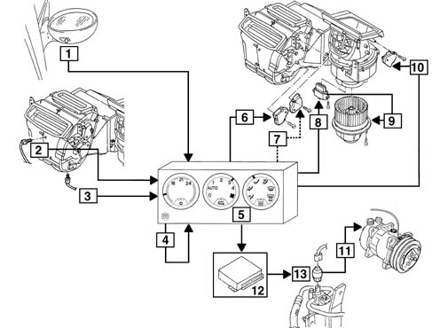
1, Outside air temperature sensor 2, Upper mixed air temperature sensor 3, Lower mixed air temperature sensor 4, Passenger compartment air temperature sensor 5, Electronic control unit 6, Mixer actuator 7, Distribution actuator 8, Electronic fan motor speed variator 9 , Fan motor 10, Recirculation flap actuator 11, Air conditioner compressor (variable displacement) 12, Electronic injection control unit 13, Four stage pressure switch
Applies to: engines: 2.4 JTD 10v; production: da 03/99 a 01/00, da 02/00 a 01/01, da 02/01 a 02/02, da 03/02 a 09/03, da 10/03; only with equipment: Air Conditioner
Version with variable displacement compressor.
1, Outside air temperature sensor 2, Upper mixed air temperature sensor 3, Lower mixed air temperature sensor 4, Passenger compartment air temperature sensor 5, Electronic control unit 6, Mixer actuator 7, Distribution actuator 8, Electronic fan motor speed variator 9 , Fan motor 10, Recirculation flap actuator 11, Air conditioner compressor (variable displacement) 12, Electronic injection control unit 13, Four stage pressure switch
Applies to: engines: 2.4 JTD 10v; production: fino a 03/98, da 04/98 a 02/99, da 03/99 a 01/00; only with equipment: Air Conditioner
Version with variable-output compressor
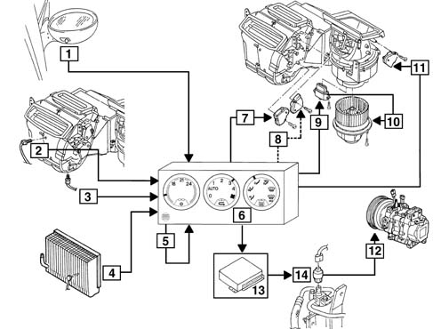
1, Outside air temperature sensor 2, Upper mixed air temperature sensor 3, Lower mixed air temperature sensor 4, Sensor on evaporator (defroster) 5, Passenger compartment temperature sensor 6, Electronic control unit 7, Mixer actuator 8, Distributor actuator 9, Electronic fan motor speed variator 10, Fan motor 11, Recirculation flap actuator 12, Air conditioner compressor (variable output) 13, Electronic control unit 14, Four-stage pressure switch
Applies to: all engines; all production periods; only with equipment: Air Conditioner
Air conditioner controls
The air conditioner control unit is located in the middle of the facia. The controls are located outside the housing.
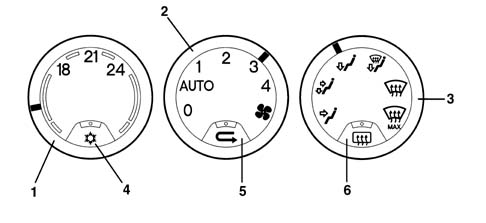
1, Temperature setting selection knob 2, Air ventilation selection knob 3, Flow distribution selection knob 4, Recirculation function activation key 4, Recirculation function activation key 5, Heated rear window activation key
Use the left-hand knob to select the required interior temperature from amongst 15 different positions. The two extreme positions correspond to maximum cooling and maximum heating respectively. These also correspond to maximum ventilation (with the middle knob set to 'AUTO').
The middle knob adjusts air ventilation to four fixed air outputs (1, 2, 3 and 4), or works automatically when set to 'AUTO'. While in this mode, the system itself automatically selects the best possible output in order to reach or maintain the required temperature.
In the '0' position, ventilation is excluded.
The right-hand knob selects air distribution to the passenger compartment. Different distribution patterns are available. The positions indicated by a white symbol correspond - in a clockwise direction - to:
- flow to front outlets only,
- flow to front and lower outlets,
- flow to lower outlets only,
- flow to lower outlets and windscreen,
- flow to windscreen only;
In this case, flow adjustment is fully manual and the electronic control unit software plays no part.
The last position, indicated in yellow, corresponds to the max. defrosting function. This automatically sets ideal conditions for rapidly demisting/defrosting the windscreen, i.e.:
- flow directed entirely to the windscreen;
- maximum air output
- as much warm air as possible taken into the mixture;
- air taken from outside (regardless of recirculation button position);
- cooling circuit enabled (regardless of button position);
- heated rear window activated.
the left button enables the operation of the air cooling circuit; when the button is pressed the LED comes on.
Cars up to September 2000.
Air coolant circuit operation is automatically enabled (without pressing the key) when the key is turned on or the temperature setting is altered, if the temperature of air directed to the outlets is lower than that of outside air.
Proceed as follows, with the ignition OFF:
- 1. position the knobs as shown in the figure
- temperature selection knob set to 'maximum heat'
- fan selection knob set to '0'
- flow distribution selection knob set to 'frontal flow'
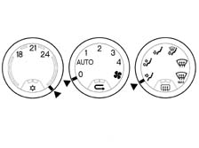
2. turn the ignition key to the ON position
3 within 10 seconds, turn the fan selection knob to 'AUTO', then to '0', then to 'AUTO' again and then lastly to '0'
4. turn the ignition OFF
The control unit is now configured to manual operating mode: the compressor is enabled by pressing the relevant button. This configuration is maintained for all subsequent start-ups.
Compressor activation remains automatic in this configuration with 'recirculation' and 'max. defrosting' functions.
To go back to automatic mode, simply repeat the sequence indicated at points 1-4.
When pressed, the central button activates the air recirculation function; when the button is pressed the LED comes on. If the button is not pressed, dynamic air is taken in from ouside due to the car's motion.
Only for cars up to September 2000.
Activation of the recirculation function automatically enables the air coolant circuit. This may be turned off by pressing the relevant button.
The right button switches on the heated rear window; when the button is pressed, the LED comes on (for more details see Characteristic of working principle 5505A multi-function components
Air conditioner system control unit operating system
Calculating air output and temperature
The control unit adjusts passenger compartment temperature to the user's setting as quickly as possible. While doing this, it takes into account existing settings and temperature readings.
The control unit computes optimal operating parameters (flow and temperature of air taken into the passenger compartment) via thermal balance equations that take into account heat introduced into the passenger compartment, heat dispersed and numerous other thermal factors and coefficients.
Mixer flap position and fan speed are controlled automatically on the basis of readings obtained.
The calculation program is rerun every 15 seconds, or if a parameter is changed manually.
Activating air cooling function
the relevant button enables the operation of the air cooling circuit; but the actual switching on of the compressor is excluded:
- outdoor temperature lower than 0° ± 2° C (if recirculation is not activated)
- passenger compartment temperature lower than 0 ° ± 2° C (if recirculation is activated)
- evaporator temperature lower than 2° C (for system with variable output compressor and defrosting sensor)
The compressor can also be switched off by operating the pressure switch controlling the circuit or by the engine control unit (see DESCRIPTIONS AND OPERATION: Unit 10).
Control unit pin-out
-
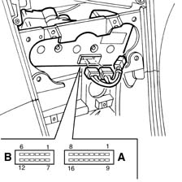
Connector A, 16-way Pin, Signal A1, Outdoor temperature signal (for instrument) A2, Actuator power supply (5v) A3, Recirculation flap actuator feedback A4, Temperature signal from fan motor A5, Sensor on evaporator (only for system with variable output compressor) A6, Heated rear window activation led A7, Compressor enablement (12V) A8, Max. defrosting function control A9, Passenger compartment temperature sensor A10, Outdoor air temperature sensor A11, Lower mixed air temperature sensor A12, Upper mixed air temperature sensor A13, Sensor earth A14, Earth A15, N.C. A16, Distribution actuator control Connector B, 18-way Pin, Signal B1, Rear window activation control B2, Lighting power supply (with side lights on) B3, Fan motor control B4, N.C. B5, Ignition-operated power supply B6, Mixer actuator control B7, Car speed signal B8, Tester line K B9, Distribution actuator feedback B10, Direct power supply B11, Recirculation flap actuator control B12, Mixer actuator feedback
Detection of presence sensor on evaporator (function present up to 11/99)
The same control unit is used for versions with a variable displacement compressor and also for versions with a variable output compressor, fitted with a sensor on the evaporator.
Upon first start-up (ignition turned ON), the control unit detects or fails to detect the sensor and acts accordingly.
If the control unit is changed, use an Examiner or other Tester to check that the control unit fitted is properly initialised for this particular version.
Checking outdoor temperature signal
The signal from the outdoor temperature sensor fitted to the right door mirror is filtered by the control unit, which does not consider values recorded when the car is travelling at low speed, i.e. it avoids taking values that would be inaccurate, e.g. due to the car standing in a traffic jam with its engine running.
Self-diagnosis
The control unit uses sensor monitoring and adjustment software with actuator self-adaption to record and store a series of anomalies and faults that could affect the system.
When the ignition is turned to MAR, the air conditioner activation key begins to flash if the control unit contains any stored errors .
These stored errors may be read using an Examiner or other Tester.
If the error relates to the sensor on the evaporator (when present), the control unit cuts out the air cooling circuit for safety reasons to prevent the evaporator icing up.
If the error concerns one of the other sensors, the control unit continues to ensure manual system control (e.g. it moves the mixer flap through one click whenever the control knob is moved...).
When the ignition is turned ON, the control unit moves the mixer actuator and distribution actuator to record the extreme positions: an error is indicated if this operation is not successful.
The recirculation flap actuator is not fitted with a feedback potentiometer and an error is indicated if abnormal current absorption is indicated due to sticking or an obstacle in the way.
System components
Conveyor/distributor unit
The electric fan directs the flow of outside air towards the interior of the vehicle.
f, on the other hand, the recirculation function is activated, the special flap directs the flow of air from the inside the pasenger compartment.
The flow of air initally comes into contact with the evaporator, then it partly or totally envelops the heater radiator, depending on the position of the mixture flap.
Lastly, the air is sent to the various vents depending on the position of the upper, centre and lower distribution flaps.
All the flaps are operated by electric motors controlled by the control unit.
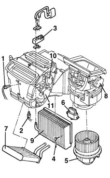
1, Upper mixed air temperature sensor 2, Lower mixed air temperature sensor 3, Expansion valve 4, Sensor on evaporator (only for system with variable output compressor) 5, Fan motor 6, Fan motor electronic variator 7, Heater radiator 8, Recirculation flap actuator 9, Air conditioning evaporator unit 10, Distributor actuator 11, Mixer actuator
Fan motor
The electric fan which sends the outside or recirculation air towards the duct/distributor receives a 12 V supply and is operated at different speeds by a nearby electronic regulator.
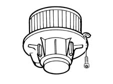
Filter device (pollen filter)
The air introduced into the passenger compartment from the outside passes through a combined filter, i.e. consisting of two layers:
- the first 'particle' layer has the task of trapping the small particles of fine dust and pollen
- the second 'active charcoal' layer is designed to trap certain pollutant elements in the atmosphere.
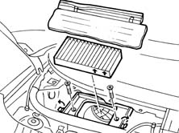
Fan motor electronic variator
An electronic governor drives the fan at different speeds.
The electronic governor receives a control signal from the control unit and converts it to a variable voltage signal that controls the fan. This voltage control is also stabilized, i.e. it is independent of the battery voltage variations.
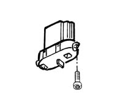
Heater radiator
The radiator is a heat exchanger connected to the engine cooling circuit by means of a pipe which takes hot water from the engine to heat the air which is sent to the passenger compartment
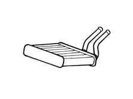
Recirculation flap actuator
Rotation of the outside air inlet flap is controlled via the control unit by means of the recirculation actuator. This operates the flap in two extreme positions - 'dynamic air' and 'recirculation' without any intermediate positions.
A motor with a 12 V supply controls the rotary movement of a drive pin which acts directly on the flap:
- 0V = clockwise rotation
- 5V = anticlockwise rotation
- The actuator is not fitted with a feedback potentiometer and therefore it is controlled by the control unit by checking the current absorption.
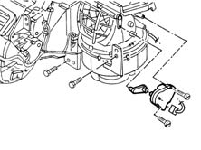
Distribution actuator
Air flow distribution is controlled by the control unit by means of the recirculation actuator. This operates three flaps that send an air flow to the lower, front or windscreen outlets.
A motor with a 12 V supply controls the rotary movement of a drive pin which acts directly on the distribution flap:
- 0V = clockwise rotation
- 2.5 V= engine off
- 5V = anticlockwise rotation
- A potentiometer (10 kOhms) detects the effective position and acts with feedback to the control unit checking the complete travel between the extreme positions (maximum travel 120°) .
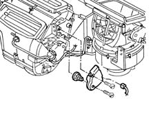
Mixer actuator
The temperature of treated air is adjusted by the control unit via the actuator responsible for mixing warm and cool air. This operates the flap that directs an air flow to the heater radiator.
A motor with a 12 V supply controls the rotary movement of a drive pin which acts directly on the mixer flap:
- 0V = clockwise rotation
- 2.5 V = engine off
- 5V = anticlockwise rotation
A potentiometer (10 kOhms) detects the effective position and acts with feedback to the control unit checking the complete travel between the extreme positions (maximum travel 120°) .
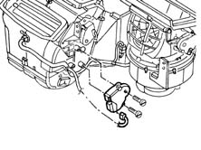
Passenger compartment air temperature sensor
This is an NTC sensor ( R = 10 kOhm at 25° C)
The sensor is 'ventilated', i.e. it incorporates a small fan (operated by a brushless motor). This is permanently on to ensure that the temperature reading is not affected by the warmer, still air trapped inside the facia.
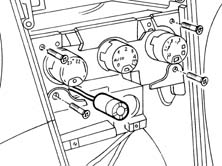
Outside air temperature sensor
This is an NTC sensor ( R = 10 kOhm at 25° C)
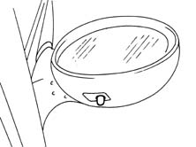
Lower mixed air temperature sensor
This is an NTC sensor ( R = 10 kOhm at 25° C)
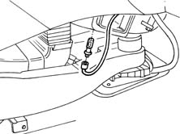
Upper mixed air temperature sensor
This is an NTC sensor ( R = 10 kOhm at 25° C)
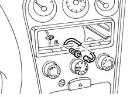
Evaporator temperature sensor
(only for systems with variable output compressors)
This is an NTC sensor (R = 5 kOhm at 25 ° C).
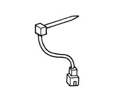
AIR CONDITIONER COOLING CIRCUIT
The air conditioning system is designed to cool and dehumidify the air to be introduced into the passenger compartment.
The cooling circuit operates according to a common refrigerant cycle with R134a fluid where all the changes of state (from liquid to gas and viceversa) are exploited to absorb and give off heat.
The operation of the system takes place at two pressure levels: the high pressure is maintained by the compressor, the low pressure by the expansion valve.
The refrigerant fluid comes out of the compressor in the form of gas at a high pressure and high temperature.
It then enters the condenser, undergoes refrigeration and comes out liquified.
The fluid then passes through the drier filter, which absorbs any particles of water, because the water present in the pipes could, on freezing, block the expansion valve, reducing the efficiency of the cycle.
In effect, in the next expansion valve, the pressure of the fluid is lowered and as a result so too is its temperature.
The fluid, still in a liquid state, enters the evaporator: evaporation removes heat from the air which enters the passenger compartment. In addition, when this air comes into contact with the cold walls of the evaporator it loses a high percentage of humidity and therefore enters the vehicle colder and less humid.
Lastly, the fluid returns to the compressor and the cycle begins again.
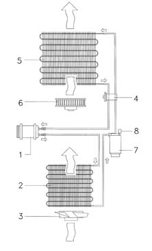
1, Compressor 2, Condenser 3, Fan motor 4, Expansion valve 5, Evaporator unit 6, Passenger compartment fan 7, Drier filter 8, 4 stage pressure switch
Location of system components
-
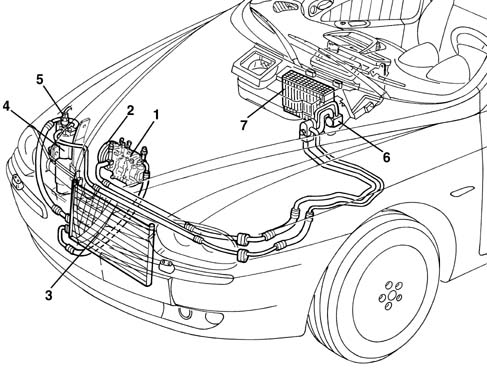
1, Air conditioning compressor 2, Pulley with compressor electro-magnet coupling 3, Air conditioning condenser 4, Drier filter 5, 4 stage pressure switch 6, Expansion valve 7, Evaporator unit
Applies to: engines: 1.6 TS , 1.8 TS, 2.5 V6, 1.9 JTD 8v ; all production periods; only with equipment: Air Conditioner
Air conditioner compressor
The compressor fitted on these versions is the variable capacity SANDEN SD7V16 type.
According to variations in the system load conditions - changing external temperature and/or humidity or sharp variations in the engine load - the compressor processes the fluid through a capacity which starting from the maximum value of 161.3 cm 3 /rev, is gradually reduced to 10.4 cm 3 /rev: this solution is defined 'unlimited variable displacement';
it protects the evaporator against freezing so effectively that a frost sensor is not necessary.
The compressor is the alternating piston type: the variation in the capacity is achieved by titling the connecting rod holder plate with a consequent variation in the piston stroke: the movement of the plate is activated by an internal adjustment valve according to the balance of pressure upstream and downstream of the compressor. In particular, a low inlet pressure involves the shuttering of the compressor (reduced capacity), whilst a high pressure involves operation at maximum power (maximum capacity).
Applies to: all engines; all production periods; only with equipment: Air Conditioner
Components and operation
The SD7V16 compressor is represented schematically in the figure below; it is made up of seven pistons (2) and connecting rods (3) fixed to a connecting rod holder plate (4). The rotary motion of the plate (4), fitted on the shaft (5) provides the alternating movement to the pistons.
A different tilt of the plate allows the capacity to be varied: maximum tilt (as in the figure) for maximum capacity; tilt at zero limit (vertical position) for minimum capacity, almost zero.
The rotation of the plate (4) takes place around the pin (6) hinged on the shaft (5) arm (7).
The movement of the plate (4) in relation to the shaft (5) takes place through suitable splining in a low resistance material.
The plate (4) slides underneath on a guide (9) through a slide (8) made from a low friction material.
The diaphragm valve (1) controls the flow rate according to the difference between the Pa (inlet pressure) and the Pi (pressure inside the compressor).
The solution adopted for this compressor is to keep the internal pressure Pi constant, with advantages in terms of ease of adjustment, quietness and smooth operation.
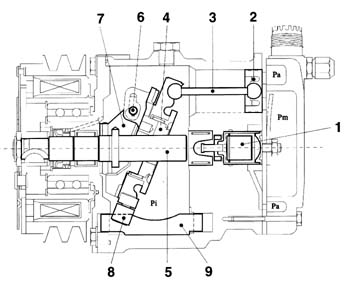
1, Diaphragm valve 2, Pistons 3, Connecting rods 4, Connecting rod holder plate 5, Shaft 6, Pin 7, Arm 8, Slide 9, Guide Pa, inlet pressure Pi, pressure inside the compressor Pm., output pressure
Displacement control
The capacity is altered by changing the inclination of the connecting rod holder plate (1), achieved by varying the equilibrium of the presures and consequently the forces acting on the actual plate.
This equilibrium is modified through the opening of the diaphragm valve (4) according to the following logic:
- when the inlet pressure (Pa) is high, the valve (4) remains closed; the reaction forces of the pistons P1 mainly act on the hinged (2) plate (1) causing a clockwise movement M1 applied to the plate hinge, which remains in the maximum inclination position;
- if Pa decreases, the difference in pressure across the diaphragm opens the valve (1); this creates a thrust pressure P2 on the shaft (3) which causes an anti-clockwise moment M2 which causes the plate (4) to rotate towards a more vertical position, i.e. a gradual reduction in the capacity.
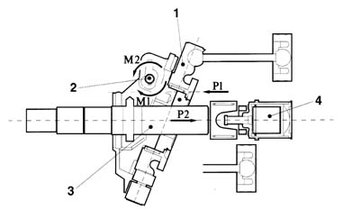
1, Connecting rod holder plate 2, Fulcrum 3, Shaft 4, Diaphragm valve
Applies to: engines: 2.4 JTD 10v; production: fino a 03/98, da 04/98 a 02/99, da 03/99 a 01/00; only with equipment: Air Conditioner
Air conditioner compressor
A NIPPODENSO compressor with fixed capacity but variable output is fitted to this version.
Output is altered automatically by the compressor according to load (pressure difference between upstream and downstream). A special valve controls the opening of a by-pass which cuts off a proportion of the fluid from the compression stage; flow may be reduced down to 17% of maximum flow.
The adjustment particularly affects intake pressure:
- if intake pressure is reduced, output tends to drop. This takes place for example when the refrigerating cycle operates under the best conditions: high engine (and compressor) rpm, high heat exchange to the condenser, etc.; (without a compressor, with this variable configuration there would be a continuous deactivation and reactivation of the compressor);
- high intake pressure increase output to a maximum. This occurs, for example, when engine speed is low and cooling requirement is high.
Applies to: all engines; all production periods; only with equipment: Air Conditioner
Components and operation
This contains of case (1) containing chamber (2). Four vanes (3) driven by hub (4) turn inside the chamber. The axis of rotation does not coincide with the theoretical chamber axis. Due to the special chamber geometry, the vanes stay in contact with the inner surface of the chamber as they turn. In this way, the volume of the compartments between one vane and the next alters as the vanes turn.
Case (1) is fitted with two covers, front cover (5) and rear cover (6). These contain an intake or low pressure chamber (7) and a high pressure chamber (8). Gas taken in through fitting (10) on cover (5) flows through low pressure chamber (7) and slot (11) in case (1).
The gas is then compressed and then expelled through duct (12) in high pressure chamber (8) and admitted to the system through fitting (13). Plate valve (14) prevents high pressure gas from flowing into the compressor.
Themal contact (15) fitted to the top part of the case is connected in line with the electromagnetic coupling. When the temperature reaches dangerous levels (higher than 160° C), thermal contact (15) turns off the compressor. It turns it back on when temperature drops below 140° C.
This prevents the system operating under dangerous conditions, e.g. without any fluid or oil.
Pressure governor (16) in the lower part of the compressor is used to regulate fluid flow within the compressor, as described below.
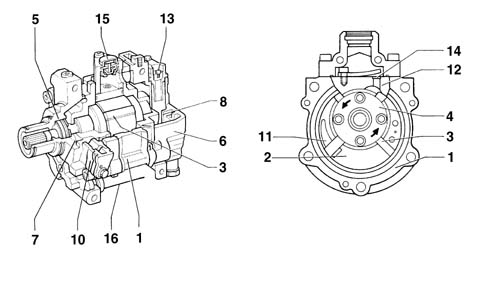
1, Body 2, Chamber 3, Vanes 4, Hub 5, Front cover 6, Rear cover 7, Pressure chamber 8, High pressure chamber 10, Fitting 11, Slit 12, Port 13, Fitting 14, Strip valve 15, Thermal contact
Controlling output
Output is controlled via a pneumatic mechanism built into the compressor. This by-passes a proportion of gas in the compression phase to the intake, i.e. the low pressure chamber.
When active, this sytem reduces the compressor port gradually and continuously to 17% of its full size.
The mechanism consists of piston (A), which is able to slide within cylinder (C) countered by spring (B).
When the piston is positioned as in Figure A, it cuts off holes (D) which bring compartment (E) - containing gas at the beginning of the compression stage - into contact with low pressure chamber (F). Conversely, when piston (A) is in the position shown in Figure B, holes (D) bring both chambers into communication.
The piston is operated by a small amount of gas under pressure, taken from duct (J), which communicates with calibrated hole (G).
Pressure governor (H) is controlled by the pressure difference between intake - chamber (F) - and outlet. With high intake pressure, valve (I) is closed and the gas pressure acting on piston (A) moves into the position shown in Figure A. Holes (D) are cut off and no gas is by-passed. Gas compression begins in chamber (E) as described below.
When intake pressure drops, governor (H) opens valve (I) to allow the gas under pressure present in duct (J) and cylinder (C) to be discharged into low pressure chamber (F). Piston (A) is then pushed by spring (B) so that by-pass holes (D) are able to open.
In this way, part of the gas in chamber (D) - early compression stage - is able to flow into low pressure chamber (F) until vane (K) has passed holes (D); in this way, the amount of gas present in chamber (E) is reduced and compressor output falls.
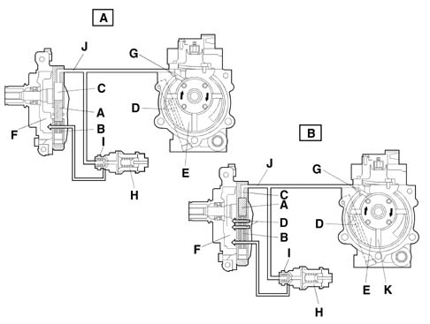
Normal operation
(100% of by-pass output closed)
Gas is taken in through intake port (D) and then steadily expands into compartment (C), which is delimited by vanes (A) and (B). The intake stage therefore begins.
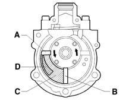
As a result of the new position assumed by vanes (A) and (B), the volume of compartment (C) is maximum. More specifically, vane (A) cuts off communication between compartment (C) and port (D) to complete the intake stage.
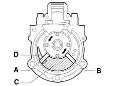
As the volume of compartment (C) drops, gas pressure increases to begin the compression stage.
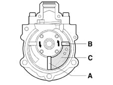
Gas pressure increases to open plate valve (E). At this precise moment, the compression stage ends and the exhaust stage begins.
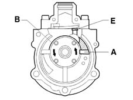
The exhaust stage ends when vanes (A) and (B) assume the position shown in the figure.
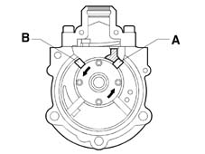
Operation with reduced flow (b)
(up to 17% of flow - by-pass open)
Gas is taken in through intake port (D) and then steadily expands into compartment (C), which is delimited by vanes (A) and (B). The intake stage therefore begins.
If holes (F) are open, part of the gas can escape. The compression stage cannot begin.
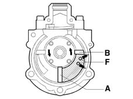
Once the vane has passed holes (F), the volume of compartment (C) falls and the pressure of the remaining gas increases (to a minimum of 17% of the total). The compression stage begins.
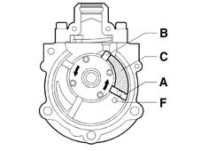
Gas pressure increases to open plate valve (E). At this precise moment, the compression stage ends and the exhaust stage begins.
Applies to: engines: 2.4 JTD 10v; production: da 03/99 a 01/00, da 02/00 a 01/01, da 02/01 a 02/02, da 03/02 a 09/03, da 10/03; only with equipment: Air Conditioner
Air conditioner compressor
Specifications
The compressor fitted on this version is the DENSO 7SB16 variable capacity swash plate type.
The compressor capacity varies between a maximum value (161.5 cc/rev) and a minimum value (8 cc/rev) according to the thermal load in the climate control system: this feature makes it possible to reduce the capacity (and therefore the compressor power) according to the refrigerant power needed.
The alternating piston type compressor produces the variation in the capacity by tilting the rotary plate (swash plate) which defines the piston stroke. The way the pistons are connected to the plate, which identifies the technology, makes it possible to have a single plate which rotates and guides the pistons with the advantage of reducing vibrations, noise and torque fluctuations.
The variation in the capacity is achieved by means of a regulation valve which balances the pressure inside the compressor casing according to the compressor inlet and outlet pressure. The balance of the forces due to the pressures makes it possible to adjust the inclination of the plate and, consequently, the capacity. The maximum capacity is achieved with the plate at the maximum angle, whilst with the plate almost vertical, the capacity is minimum. The compressor is started at minimum capacity thanks to a special spring.
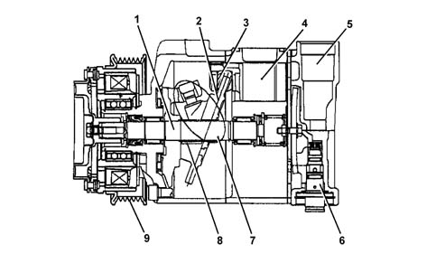
1, Shaft 2, Plate 3, Pad 4, Piston 5, Inlet muffler 6, Valve 7, Swash plate mechanism 8, Minimum capacity spring 9, Electro-clutch pulley +
Operation
The drive is transmitted by the auxiliary belt to the pulley (9) and, consequently, when the electro-clutch is activated, to the shaft (1). The rotary motion is transformed into th rectilinear motion of the pistons (4) via the plate (2) which is on the shaft and slides on the piston (3) pads. The regulation valve (6) controls the capacity so that the inlet pressure is always as desired. The spring (8) keeps the plate in the minimum capacity position when the compressor is deactivated. The muffler (5) reduces the inlet gas impulses and consequently the noise and vibrations.
Applies to: all engines; all production periods; only with equipment: Air Conditioner
Other system components
Compressor pulley with electromagnetic coupling
The compressor is engine-driven via a belt and a pulley fitted to an electromagnetic coupling. An electrical signal (12V) from the system control unit engages the coupling when the control system permits. (see DESCRIPTION AND OPERATION: Unit 10)
Air conditioner condenser
The condenser is a heat exchanger located in front of the engine cooling radiator.
The structure is parallel flow type with U pipes that connect both manifolds located on the right hand side of the condenser. Each individual pipe contains up to 14 fluid ducts.
The coolant, in a gaseous state, passes through the condenser pipes and liquefies (at an average temperature of 60° C).
The outside of the condenser comes into contact with the air produced by the vehicle moving forwards. When the vehicle is stationary or in a traffic jam, the air is produced by the same fan used by the engine radiator (for greater detail, see wiring diagrams: 'Engine cooling').
An insufficient heat exchange in the condenser increases the pressure in the system and causes the incomplete condensation of the fluid with a considerable reduction in the efficiency of the system.
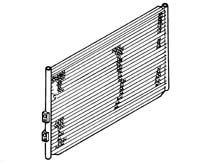
Drier filter
The drier filter is connected by a pipe to the evaporator inlet duct and filters the refrigerant fluid mainly in a gaseous state but partly also in a liquid state, plus the lubricant oil/anti-freeze.
Any small impurities which could obstruct the expansion valve are retained by two filter layers whilst the (dehydration) water is retained by molecular sieves or a chemical compound (SILICAGEL) to prevent any particles of moisture contained in the system from freezing in the expansion valve and stopping it from working.
For this reason all the system components must be stored in a dry place with the connectors sealed until the time of fitting.
In the lower part of the shaped pipe, which is positioned inside the accumulator and is contact with the outlet connector, there is an opening to ensure the return of the lubricant oil to the compressor. There is a metal gauze filter seal on the above mentioned shaped pipe, by the opening for the oil.
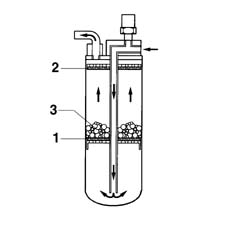
1, Filtering layer 2, Filtering layer 3 Silicagel
4-stage pressure switch
A four stage pressure switch controls the safe and correct operation of the circuit.
The four pressure stages allow the compressor and the cooling fan to be switched on/off as follows:
- 1st level (below 2.5 bar approx): minimum pressure allowing the compressor to be switched on
- 2nd level (15 bar approx): pressure that requires the cooling fan to be switched on at the first speed
- 3rd level (20 bar approx): pressure that requires the cooling fan to be switched on at the second speed
- 4th level (beyond 28 bar approx): pressure too high and therefore dangerous for the entire system
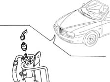
Expansion valve
The thermostatic expansion valve fitted on the evaporator inlet and outlet ducts has the task of regulating the flow and expansion of the R134a fluid, causing it to change from the liquid state to the gaseous state before it enters the evaporator.
The automatic regulation of the passage section for the refrigerant fluid inside the expansion valve is carried out by a sensitive bulb which, according to the temperature of the fluid, suitably adjusts the size of the opening by acting on a special spring which moves a shutter and determines the extent of the expansion.
The increase in temperature at the evaporator outlet, measured by the bulb, causes the opening of the valve with a consequent increase in the flow rate of the fluid to the evaporator.
Conversely, at low temperatures, the flow rate is decreased.
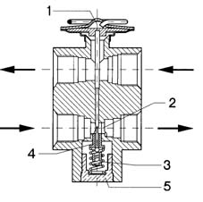
1, Sensitive bulb 2, Passage 3, Spring 4, Shutter 5, Adjustment screw
Evaporator
The evaporator is the second heat exchanger in the system and consists of an aluminium structure with fins which increase the heat exchange surface. It is located in the duct/distributor unit.
The evaporator inlet and outlet ducts are fixed to the assembly plates which constitute the heat exchange area. The evaporator is chemically treated to make it corrosion resistant.
It represents the system cooling element and can have (recirculation) air coming from the passenger compartment or air from the outside passing through it for the necessary exchange of air inside the passenger compartment.
The outside or recirculation air which passes through the evaporator is at a higher temperature than that of the refrigerant fluid, in a liquid state at a low pressure and temperature, which it contains and this causes evaporation (always at low pressure).
At the same time, the air which comes into contact with the evaporator fins is cooled and dehumidified. The humidity which condenses on the evaporator fins is collected and discharged outside the vehicle.
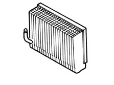
Applies to: all engines; production: da 03/02 a 09/03, da 10/03
GLOSSARY
Climate control
Fully automatic system for adjusting ventilation, heating and air conditioning. The system uses an extremely sophisticated system to maintain a preset temperature inside the car, regardless of outside weather conditions.
Led
The LED code (Light Emitting Diode) is used for particular diodes capable of emitting light at a certain wavelength when a low voltage electric current passes through.
Recirculation
This is a function of the ventilation system which makes it possible to circulate the same air in the passenger compartment, excluding the intake of outside air. It is a very useful function because it makes it possible to exclude the intake of undesired outside air into the passenger compartment (fumes, air polluted by driving in traffic, etc.).
Heat exchanger
This device is designed (with a relatively small volume compared with the heat exchange surfaces) to allow the flow of heat from the fluid at a higher temperature to another fluid at ambient temperature.
NTC sensor
Negative temperature coefficient resistance. Sensor resistance alters as the temperature changes. More specifically, it drops as temperature increases.
CONSTRUCTION FEATURES
TWIN LEVEL AUTOMATICALLY CONTROLLED CLIMATE CONTROL SYSTEM
The automatic climate control is managed by a control unit which, thanks to an extremely sophisticated operating logic, is capable of controlling the temperature in two areas of the passenger compartment, heating or cooling the incoming air so that it reaches the desired temperature. It is also capable of demisting the windscreen surface and the side windows relatively quickly which improves safety.
This performance is achieved thanks to the excellent software logic and the air distribution.
Location of system components
The diagram shows the location of the main components.
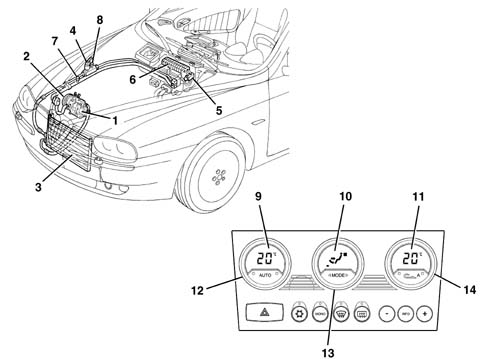
1 - Air conditioning compressor 2 - Pulley with compressor electro-magnet coupling 3 - Air conditioning condenser with drier filter incorporated 4 - 4 stage pressure switch 5 - Expansion vlve 6 - Evaporator unit 7 - Low pressure connector 8 - High pressure connector 9 - Equivalent temperature/temperature set on driver's side display 10 - Heater fan speed/air distribution display 11 - Equivalent temperature/temperature set on passenger side display 12 - Driver's temperature selector knob 13 - Heater fan speed/OFF control knob 14 - Passenger temperature selector knob
Interior air circulation diagram
The diagram illustrates the circulation of the air in the passenger compartment.
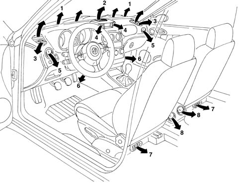
1 - Upper fixed vent for defrosting or demisting windscreen 2 - Upper centre adjustable vent 3 - Fixed vents for defrosting or demisting side windows 4 - Adjustable centre vents 5 - Adjustable side vents 6 - Front footwell fixed vents 7 - Rear footwell fixed vents 8 - Adjustable rear vents
Conveyor/distributor unit
It consists of two modules which contain inside:
- the fan
- the evaporator
- the heater radiator
- the lower mixed air temperature sensors.
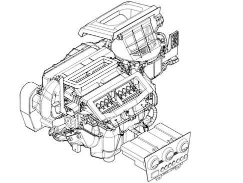
The diagram below illustrates a cross section of the assembly
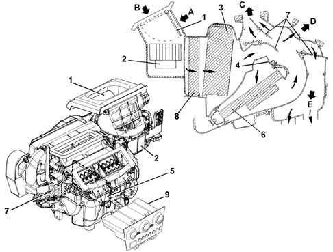
1 - Intake/recirculation air flap 2 - Electric fan 3 - Evaporator 4 - Air mixture flaps 5 - Mixture flaps partition 6 - Heater radiator 7 - Air distribution flaps A - Recirculation air flow B - Outside air flow C - Windscreen/side windows air flow D - Centre and side vents air flow E - Interior air vents flow
The electric fan directs the flow of outside air towards the interior of the vehicle.
The air introduced into the passenger compartment from the outside passes through a combined filter, i.e. consisting of two layers:
- the first 'particle' layer has the task of trapping the small particles of fine dust and pollen
- the second 'active charcoal' layer is designed to trap certain pollutant elements in the atmosphere.
If, on the other hand, the recirculation function is activated, the special flap directs the flow of air from the inside the pasenger compartment. The flow of air initally comes into contact with the evaporator, then it partly or totally envelops the heater radiator, depending on the position of the mixture flap. Lastly, the air is sent to the various vents depending on the position of the upper, centre and lower distribution flaps. All the flaps are operated by electric motors controlled by the control unit.
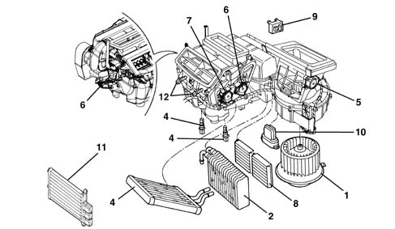
1 - Electric fan 2 - Evaporator 3 - Heater radiator 4 - Lower mixed air sensors 5 - Recirculation flap actuator 6 - Mixed air flap actuators 7 - Footweel/vent flaps actuator 8 - Combined filter element 9 - Air Quality Sensor 10 - Fan electronic governor 11 - Additional heater (only for Diesel JTD versions) 12 - Upper mixed air sensors
The upper mixed air sensors are located at the dashboard vents
All the flaps are opreated by special actuators and kinematic mechanisms controlled by the control unit.
Electronic control unit
The diagram below illustrates the system controls.
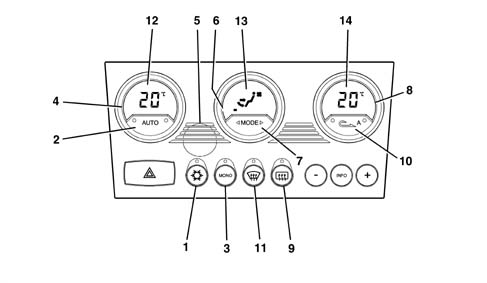
1 - Compressor enabling/disabling button (orange LED) 2 - AUTO button for automatic control of all functions (2 orange LEDs) 3 - MONO button controlling single/differentiated temperature selections (orange LED) 4 - Driver's temperature selector knob 5 - Passenger compartment temperature sensor protective grille 6 - Heater fan speed/OFF control knob 7 - Air distribution selector button 8 - Passenger temperature selector knob 9 - Heated rear windscreen button (amber LED) 10 - Air recirculation E/l button (2 orange-amber LEDs) A = automatic operation of recirculation (amber LED) 11 - MAX-DEF function button (amber LED) 12 - Equivalent temperature/passenger temperature setting display 13 - Heater fan speed and air distribution display 14 - Equivalent temperature/driver's temperature setting display
The climate control system automatically controls the temperature and ventilation with recirculation.
The user can select the desired temperature within the limitations of the system.
The control unit manages the automatic climate control system responsible for the temperature of the air in the two areas of the passenger compartment.
The split automatic climate control system controls the temperature on both the driver and passenger sides, heating or cooling the air introduced into the passenger compartment so that it reaches the desired level.
The control unit acquires information concerning the temperature from the outside air sensor, the treated air sensors (two upper and two lower), the passenger compartment sensor, the solar sensor, the demisting sensor and the pollution sensor as well as from the body computer (engine speed and vehicle speed). By processing this information using a special algorhythm, the microprocessor regulates the following parameters/functions:
- Air temperature at the driver/passenger vents.
- Air distribution to the vents.
- Speed of the fan (varies continuously).
- Compressor engagement.
- Recirculation.
The following parameters/functions can be modified manually:
- Fan speed.
- Distribution direction
- Compressor disabling
- Defrosting/demisting function
- Recirculation
Manual selections always take precedence over automatic selections and are stored until the user deliberately cancels the command, allowing the automatic device to take control over the relevant function. The manual setting of a function does not adversely affect the control of other functions set to automatic, in particular, the control of the temperature is always automatic when the system is running.
At each key on the system restores the conditions memorized when the engine was switched off, except for the MAX DEF cuntion which is zeroed.
The entire system can be switched OFF manually, completely deactivating the air conditioning system, using the centre knob (except for the recirculation and heated rear windscreen), insulating the passenger compartment from the outside ambient. The temperature setting symbols in the side displays also switch off. The outside temperature reading remains visible in the centre display of the instrument panel.
The MAX-DEF function makes it possible to group together a collection of actions which allow both the windscreen and the rearscreen to be demisted quickly.
At each key off the system, after having memorized the control/actuator situation, sets the distribution to Heat and the recirculation to open.
Functional state display
The display of the climate control system functional state is shown through LED and DISPLAY.
The displays are dimmed when the vehicle lights are switched on.
The symbols on the switches are lit up with the ignition ON.
Centre display
Negative transmissive (red) type displaying the passenger cmopartment fan air flow rate by means of bars, the fan symbol and the human body logo with arrows showing the distribution.
Equivalent temperature setting display (driver and passenger)
Negative, transmissive (red) type, displaying the temperature requested by the driver and the passenger.
Recirculation function led
Possible functions:
- automatic recirculation LED A
- forced recirculation closed or on (passenger compartment air)
- forced recirculation open or off (outside air)
Two LEDs, one orange and one amber signalling:
Function | Amber LED | Orange LED | Recirculation state |
|---|---|---|---|
AUTOMATIC | ON | ON | RECIRCULATION |
AUTOMATIC | ON | OFF | OUTSIDE AIR |
FORCED CLOSED | OFF | ON | RECIRCULATION |
FORCED OPEN | OFF | OFF | OUTSIDE AIR |
Compressor enabling function led (ice symbol)
Orange, signalling, if on, the Compressor Enabled state and activated by the climate control system (Text >74° C).
Auto function led
Two orange LEDs signalling, if on, that all the functions are managed by the control system.
One of the LEDs (the right one) goes out if there is at least one manual Flow rate, Distribution, Compressor or Recirculation command.
The other LED (the left one) goes out if the system is not capable, on account of particular manual operations, of guaranteeing the required temperature being reached/maintained.
Max-def function led
Amber, signalling, if on, the MAX-DEF function being on.
Heated rear windscreen function led
Amber, signalling, if on, the heated rear windscreen function being on.
Control unit pin out
The electronic control unti has two connectors:
A) 26 pin connection
B) 26 pin connection
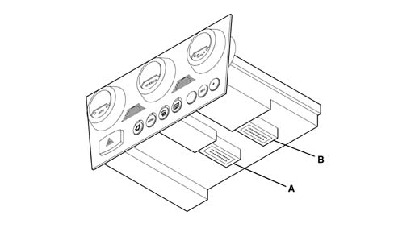
.
PIN | SIGNAL |
|---|---|
A1 | Passenger compartment sensor |
A2 | Engine coolant temperature signal |
A3 | Power earth NCL |
A4 | +30 |
A5 | Side lights activated positive |
A6 | +5V solar sensor supply |
A7 | Positive controlled by the ignition (INT) |
A8 | Positive controlled by the ignition (INT/A) |
A9 | Fan control PWM signal |
A10 | Additional heater PTC relay (50A) (JTD only) |
A11 | Compressor engagement request signal |
A12 | Additional heater PTC relay (30A) (JTD only) |
A13 | Diagnostic line K |
A14 | Max coolant temperature signal (N.C.) |
A15 | Misting sensor PWM signal |
A16 | Pollution sensor PWM signal |
A17 | Engine rpm signal |
A18 | Speedometer signal |
A19 | Left floor treated air sensor |
A20 | Right floor treated air sensor |
A21 | External temperature signal |
A22 | Fan temperature feedback signal |
A23 | Left solar sensor |
A24 | Right solar sensor |
A25 | Treated air sensor controls |
A26 | Treated air sensor controls |
B1 | Electronically protected earth |
B2 | Button signal for infocenter |
B3 | MODE button signal for infocenter |
B4 | Button signal + for infocenter |
B5 | Heated rear windscreen demisting LED |
B6 | Max Def control |
B7 | Heated rear windscreen demisting control |
B8 | Connection with infocenter |
B10 | Right mixture actuator B |
B11 | Right mixture actuator B |
B12 | Right mixture actuator A |
B13 | Right mixture actuator A |
B14 | Left mixture actuator A |
B15 | Left mixture actuator A |
B16 | Left mixture actuator B |
B17 | Left mixture actuator B |
B18 | Recirculation actuator A |
B19 | Recirculation actuator A |
B20 | Recirculation actuator B |
B21 | Recirculation actuator B |
B23 | Coil distribution actuator A |
B24 | Coil distribution actuator A |
B25 | Coil distribution actuator B |
B26 | Coil distribution actuator B |
Diagnosis
The control unit uses sensor monitoring and adjustment software with actuator self-adaption to record and store a series of anomalies and faults that could affect the system.
These stored errors may be read using an Examiner and connecting to the diagnostic socket.
Controls and functions
Air flow rate/control unit off knob
Rotating the air flow rate control knob in an anti-clockwise direction beyond the minimum flow rate (decrease below 0 bars and fan off) causes the climate control unit to be switched off (OFF).
With the compressor enabled, the minimum air flow rate is one bar, therefore it is not possible to decrease the air flow rate below this value because the control unit would switch off.
Turning the air flow rate knob, in a clockwise direction, or pressing any button whatsoever (except the heated rear windscreen and recirculation) switches the system back on, implements the requested function, if there was none previously (otherwise it confirms it) and restores all the other operating conditions that the system had memorized previously, forcing the automatic control of the flow rate if the AUTO button was used to switch it on.
In OFF the recirculation button has a dual function (ON/OFF).
Auto button
Pressing this button cancels any previous manual intervention and restores the automatic check on the following functions:
- Air distribution
- Fan speed
- Compressor
- Driver/passenger temperature setting check
The three LEDs, Compressor and AUTO, when on, indicate that all the above functions are automatically controlled.
When the right LED is off this means that a Distribution or Ventilation manoeuvre has been carried out manually.
The left LED also goes out (mainly when the compressor is disabled manually) if the control system does not manage to reach or maintain the desired temperature.
The button (A) which disables the Compressor does not necessarily switch off the right AUTO LED.
Compressor enabling/disabling button (led on - compressor enabled)
Pressing the button (A) switches off the LED, the compressor is disabled and the outside air recirculation function is enabled to prevent misting.
Once the button is pressed the function remains stored for an indefinite period even after the vehicle has stopped in the same way as the other manual controls.
The button is dual purpose and therefore pressing it a second time re-enables the compressor and the LED comes on.
If the compressor enabled LED goes out, then the right LED in the AUTO button switches off automatically.
Temperature setting flashing logic
With the compressor disabled the system checks whether the outside temperature is higher or lower or the same as the temperature set.
Under these circumstances the passenger compartment temperature cannot be lower than the outside temperature.
If the outside temperature is lower than that set, the system works normally and is capable of fulfiling the request without switching on the compressor.
If the outside temperature is the same as or higher than the temperature set, then the system is not capable of supplying the temperature request by the user and signals this showing the temperature set, flashing in the display.
At the same time as this flashing, the Automatic LEDs go out until the Compressor enabling command is renewed.
If the outside temperature conditions higher than or the same as that set or with the button (A) on remain in the memory. The outside temperature reading flashing is repeated each time the engine is started up.
Mono button
Pressing the mono button has the following effect:
- the temperature set by the passenger button becomes the same as that set by the driver and the LED comes on.
From this moment the system behaves like a single zone system.
Pressing the MONO button again or changing the passenger temperature setting causes the following to happen:
- the MONO button LED goes out and the dual zone temperture control is restored.
These functional states are maintained even after the ignition is switched on and off several times.
Passenger compartment temperature setting knobs
The passenger compartment temperature is set by the control unit each time the battery is connected at 24 ° C.
The users can alter the temperature setting using the appropriate knobs.
Turning the knobs in a clockwise direction increases the temperature set, whilst turning them in an anti-clockwise direction decreases the temperature set.
The increases/decreases are in 0.5 ° C steps and one complete revolution of the knob produces 24 steps.
The maximum permissible difference between the driver's selection and the passenger's selection of 7° C.
Turning a knob until the above mentioned difference is reached, the system attaches the current adjustment (setting) of the knob which is still to the adjustment of the knob which is moving (neither knob takes precedence).
The temperature setting range, in MONO, is 16.5 to 32.5 ° C; below 16.5 ° C the value set becomes 'LO' whilst above 32.5 ° C the value set becomes 'HI',
The range goes from 16 ° C to 33° C in DUAL-ZONE operation.
When the control unit is switched off, the value of the temperature set, shown in the display, is stored in the memory and restored at the next key-on.
If the user selects a temperature setting lower than the outside temperature with button (B) switched off (i.e. with the compressor disabled), the impossibility of achieving the temperature requested is signalled by the flashing of the temperature setting.
HIGH CONDITION (Hi)
The HI or maximum heating condition is achieved by the user setting a temperature above 32.5 ° C.
This request by the user switches off the Auto LED and forces the system into MONO and involves the following actions:
- Mixture flaps in fully hot position.
- Distribution flap at FLOOR
- Air flow rate at maximum value (seasonal)
- Compressor according to user request
- Recirculation remains as requested by user.
In the HI condition, manual settings are allowed and the exit from the MONO condition, through the button, determines the exit from the HI function and the temperature setting of 32.5° C for both zones.
Pressing the AUTO button causes the exit from the HI condition and the setting of 32.5° C
If the driver turns the temperature setting this affects the passenger setting taking out of HI at 32.5 ° C.
If the passenger turns the temperature setting then this also alters the driver's setting, taking it out of HI (at 32.5 ° C) and then they can only alter their own setting when the system is in the DuaI Zone setting.
LOW CONDITION (LO)
The LO condition or maximum cooling is reached by the user setting a temperature below 16.5° C.
This request by the user switches off the AUTO LEDs and forces the system into MONO and involves the following actions:
- Mixture flaps in fully cold position.
- Distribution flap in VENT
- Air flow rate at maximum value (seasonal)
- Compressor enabled
- Recirculation remains as requested by user. If the request is Automatic, the flap is forced shut when the passenger compartment Temp. <T ext. It returns to the normal Automatic logic on exit from LO.
In the LO condition, manual settings are allowed and the exit from the MONO condition determines the exit from the LO function and the setting of the temperature for both zones at 16.5° C.
Pressing the AUTO button causes the exit from the LO condition and a setting of 16.5° C.
If the driver rotates the temperature setting it moves the passenger adjustment (setting) outside of LO, to 16.5 ° C.
If the passenger changes the temperature setting the driver's setting also moves outside of LO (at 16.5 ° C) and then the setting can only be changed with the system in the DuaI Zone setting.
Air distribution control
The MODE button for managing the Distribution is the rocker type and therefore operates with a clockwise or anti-clockwise ROLLING logic.
There are 5 air distribution positions (VENTI, BI-LVEL, HEAT, FLOOR and DEF).
With Automatic Distribution the system controls the distribution direction and displays the choice with the appropriate arrows in the centre display coming on.
Automatic control can, in the presence of fairly strong sunshine, force the distribution to search for the maximum possible comfort level (FLOOR ->BI-LEVEL and BI-LEVEL -> VENT).
MANUAL DISTRIBUTION SETTING
One of the 5 positions can be selected manually by operating the MODE button repeatedly (rolling clockwise or anti-clockwise) and producing the following distributions:
- clockwise direction: DEF, HEAT, FLOOR, BI-LIVEL, VENT.
- anti-clockwise direction: DEF, VENT, BI-LEVEL, FLOOR, HEAT.
Each distrbution will be shown by the arrows in the centre display which light up individually or in combination according to the configuration described above.
Recirculation button
Pressing the recirculation button determines three possible types of operation, in order, according to the following logic:
- 1. automatic recirculation (amber LED on)
- 2. forced recirculation closed or on (passenger compartment inside air, orange LED on).
- 3. forced recirculation open or off (passenger compartment outside air, orange LED off - amber LED off).
AUTOMATIC OPERATION
The recirculation is managed automatically (opening/closing) depending on both the quality of the intake air and the thermal adjustment changes.
The 'Intake air quality' sensor determines the requests for closing the recirculation flap when the concentration of harmful gases exceeds dangerous levels.
In particular, it is capable of distinguishing the following levels:
- Clean air
- 1st level pollution
- Sensor broken
These requests are monitored by the control unit and, as planned, the flap is opened/closed depending on the level of pollution detected.
In any case, if a safety procedure is in progress (e.g. MAX-DEF) the flap remains in the DYNAMIC position.
In Automatic mode the right LED remains on to signal the automatic operation whilst the left LED comes on during closed recirculation and switches off during open recirculation.
FORCED RECIRCULATION CLOSED OR ON (PASSENGER COMPARTMENT INSIDE AIR)
In this type of manual operation, signalled by the right LED being off, the left LED coming on signals the closing of the recirculation flap.
FORCED RECIRCULATION OPEN OR OFF (PASSENGER COMPARTMENT OUTSIDE AIR)
In this type of manual operation, signalled by the right LED being off, the left LED going out signals the forced opening of the outside air flap.
FORCED RECIRCULATION CLOSED OR ON (PASSENGER COMPARTMENT INSIDE AIR) WITH VEHICLE STATIONARY
In Automatic mode, to prevent the intake of air into the passenger compartment which is polluted by the exhaust gases when the vehicle is stationary, when the speed of the vehicle is approaching zero (6 km/h), the system controls the closing of the recirculation. When the speed of the vehicle increases again to above 12 km/h, the system restores the pre-existing automatic mode conditions. This logic does not apply with the Compressor disabled.
Fan speed control knob
The air flow rate can be manually adjusted in steps, with one bar on the display representing 3 steps, up to a maximum of 6 bars and then it switches off. If there have been no manual interventions, the fan speed is continuously controlled in automatic mode and the appropriate number of bars light up on the display depending on the flow rate.
The control unit is capable of regulating the air flow rate according to the outside temperature. The temperature bands are: outside temperature < 15° C; from 15° C to 25° C and > 25° C.
Manual intervention on the fan control results in the exit from the AUTO condition.
In particular, to increase or decrease the fan speed, turn the centre knob in a clockwise or anti-clockwise direction, respectively.
With the ignition key in the ON position, if the control unit is controlling the air flow rate in Automatic mode, then this air flow rate is at 1 bar (minimum flow rate) until the engine is started up.
If the compressor is disabled, the ventilation control can be adjusted manually until the display shows 0 bars.
If the compressor is enabled and the engine is started up, the manual ventilation cannot go below 1 bar shown on the display, because, with the compressor enabled, there must be a minimum air flow rate to prevent the evaporator from freezing.
Max def button
The MAX DEF procedure manages the flow rate and the distribution of the air with the aim of demisting the windows as quickly as possible.
When the MAX DEF button is pressed, the system carries out the following operations:
- MAX DEF LED comes on
- Memorizing the functional state and MAX DEF previous displays
- Switching off of right LED, AUTO button and automatic recirculation (if on)
- Switching on of the DEF distribution, compressor enabling, MONO, HEATED REAR WINDSCREEN
- Temperature display on fully hot (HI) on both side displays
- Ventilation on centre display.
In addition, the activation of the following commands:
- Air flow rate with 4 bars displayed
- Distribution flap in Def position (before Mix implementation)
- Mixture flaps in Max Heat position (after implementation of Def)
- Forced air intake flap open (dynamic)
- Compressor function enabled
- Rear windscreen defrosting
During the operation of the MAX-DEF it is possible to:
- alter the air flow rate (increase/decrease) at will
- deactivate the heated rear windscreen
It is not possible to:
- Alter the temperature setting (driver/passenger)
- Alter the distribution setting.
It is possible to interrupt the MAX-DEF function by operating any of the climate control buttons (Recirculation, Compressor Enabling, Auto, Mono, MAX-DEF) implementing the return to the previous condition MAX DEF condition and implementing the command for the button pressed.
The management of the MAX-DEF procedure takes precedence over the management of the following procedures:
- LO (maximum cold)
- HI (maximum heat)
Their execution, if in progress, is interrupted if the MAX-DEF procedure is activated.
The MAX DEF lasts for 3 minutes.
Heated rear windscreen
The rear defrosting is implemented both through the special button and through the MAX DEF procedure.
The display of the function state is shown by the LED coming on/going off.
The function requesting the activation of the heated rear windscreen is only subordinate to the key on. The HEATED REAR WINDSCREEN function is not memorized with the ignition switched OFF.
Climate control sensors
Outside air temperature sensor
The NTC sensor is fitted on the door mirror and has an operating range of between -40° C and 80° C
The system checks the sensor and updates the value in the following conditions:
- temperature measured higher than that memorized: the update only takes place if the speed of the vehicle is equal to or above 30 km/h and the increase in temperature is measured for more than a minute
- temperature measured equal to or below that memorized: the system updates the value of the outside temperature
Treated air temperature sensors
There are four treated air temperature sensors.
They are positioned in the duct which directs the air to the lower (floor) vents and near the centre vents (vent).
They are NTC sensors (where the resistance decreases as the temperature increases) with an operating range of -40° C to 100° C, accuracy 0.5 ° C, Resistance at 25° C: 10Kohm ± 5%.
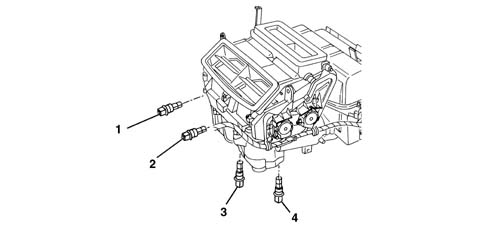
1 - Left vent treated air sensor
2 - Right vent treated air sensor
3 - Left floor treated air sensor
4 - Right floor treated air sensor
Passenger compartment inside air temperature sensor
This is an NTC sensor incorporated in the climate control unit, resistance at 25° C: 10Kohm ± 5%, operating range -40° C +100° C.
The sensor is ventilated; in effect, it incorporates a small, brushless type fan with 6 vanes with a rotation speed of 3600 ± 600 rpm and an air supply > 2.0 m/s.
The latter is always supplied so that the temperature reading is not affected by the hot air inside the dashboard.
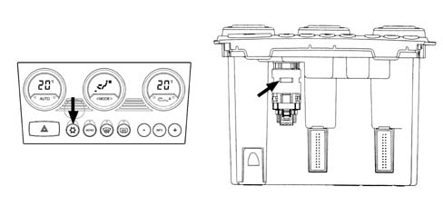
Solar sensor
The solar radiation sensor is positioned on the facia near the windscreen.
It is the DUAL ZONE type for the optimum control of the dual climate control system temperatures.
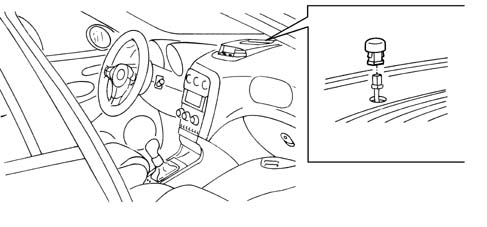
The task of this sensor is to convert light signals (lux or kcal/m2h) into a proportional electrical linear signal. The sensor is a specific type of diode (photodiode) that can alter its rate of conduction according to the amount of light that strikes it; in practice, the light that strikes the lens of the photodiodes releases electrons from the crystal grating.
A superabundance of electrons and gaps therefore appear.
The electrons flow toward the photodiode spatial charge or junction area (NP) and increase junction current (photoelectric current) in proportion with light intensity. In order to achieve a very high response rate, the photodiode is fitted with a lens designed to focus light more effectively on the photodiode semiconductor junction (N-P).
Using this signal, the control unit (NCL) varies the temperature parameters decreasing it, acting on the air distribution at the same time.
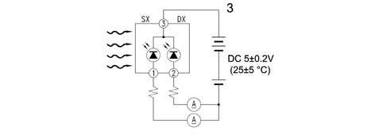
Pollution sensor (a.q.s.)
The pollution sensor is an electronic device which is designed to supply an enabling signal for the recirculation flap when the air pollution index exceeds the pre-set level, to prevent the introduction of polluted air into the passenger compartment. On return to normal conditions, the NCL restores the recirculation to the position prior to the activation of the function.
It is fitted in the dynamic air intake compartment under the windscreen.
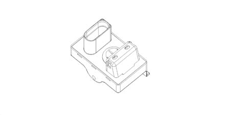
The AQS sensor is an integrated system complete with sensitive element, processor and output interface.
By using a special sensitive element it is possible to detect the presence, in the air around the vehicle, of harmful oxidizing particles (e.g. CO) or reducing particles (e.g. NOx).
The sensitive element is heated and regulated at a constant temperature of 300° C to provide the same performance in an ambient temperature range of between -25° C and 85° C. It is not affected by the speed and the temperature of the air passing through.
Misting sensor
The misting sensor is a device which operates without contact, using electronic and optic technology to detect the presence of droplets of water (misting) on the inner surface of the windscreen or the rearscreen of a vehicle. The information coming from the misting sensor is sent to the vehicle's climate control system to provide the demisting strategy.
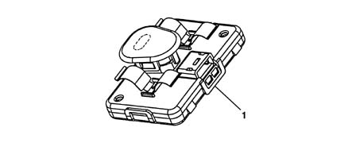
1 - Misting sensor
The sensor casing is made from high resistance polypropylene; since it works without contact it is fitted on the mounting bracket for the rear view mirror in such a position that it does not affect the driver's vision, not only for aesthetic reasons, but also so that it is not exposed to direct sunlight as the UV rays could damage it.
The only part of the sensor that is visible is the frame (a rapid attachment cover which acts as an optic lens and an aesthetic cover for the sensor) which conducts the infrared rays to the measuring surface and collect the energy reflected. This frame is usually dark red and looks almost black. In practice, this sensor (equipped with photodiodes) is capable of transforming the light signals into a proportional electrical signal which is sent to the control unit (NCL).
Using this signal, the control unit varies the parameters of the output air temperature, increasing it and altering the distribution and the speed of the actual air.
SENSOR SPECIFICATIONS
Sensor specifications are as follows:
- The sensor is activated at operating voltages between 10 and 16V.
- The operating temperature is between -20° C and 70° C.
- The sensor is capable of working in an ambient where the humidity is 95%.
- It is able to withstand a high level of vibrations without its performance being affected thanks to the type of fastening with a special algorhythm in its software.
- It can normally work up to an altitude of 3500 m and can withstand falls from a height of 1 m from the ground without suffering damage and with its performance unaffected and has been designed to prevent the entry of dust. Removing a layer of dust does not alter the calibration or adversely affect performance.
MAINTENANCE
The sensor does not require any maintenance except for the regular cleaning of the lens cover (or frame). It may be necessary to clean the lens cover when there is a large build up of dirt or impurities on the lens which prevent the reception and transmission of an acceptable quantity of light. The lens should be cleaned using a weak solution of soap and water.
Actuators
Stepping motors
The rotor which includes a certain number of pairs of permanent polymagnets, is in a rest position (minimum magnetic energy) due to the polar configuration imposed by the outside of the electro-magnetically energized stator.
1 - Rotor 2 - Stator A casing 3 - Stator B casing 4 - Winding A 5 - Winding B
If the reversal of polarity of the energizing windings is carried out correctly by the digitally controlled orders, the rotor turns exactly one step in the direction selected and moves into a new rest position.
In this case the energizing current is independent from the load and if it is applied with a rapid sequence of pulses (frequency) the stepping movement is transformed into a practically continuous movement.
As with direct current geared motors, the polarity of the stator windings is correctly reversed by means of switches which are formed by electronic power stages in the control unit.
The number of steps for each rotation results from the number of polar pairs (P) of the rotor and the number of phases (m) for the stator.
The typical positioning accuracty for these geared motors is about ± 5% of the stepping angle and is mainly not connected to the total of positioning steps i.e. the positioning angle. The angular increments (usually > 1.8°) can vary according to the task that the geared motor has to perform. These types of geared motor are widely used in new systems.
Air mixture flap actuators
The actuators rotate the mixture flaps according to the control unit command.
A motor with a 12 volt supply controls the rotary movement of a drive pin which acts directly on the mixture flaps.
SPECIFICATIONS:
- nominal voltage 12V
- nominal operating frequency 200 Hz
- nominal speed 1.67 RPM
- steps per revolution 7200 (7200 impulses for 1 revolution)
- reduction ratio 300
- coil resistance 84 ohm
Air distribution actuator
The actuator moves via a rack slide, with guiding splines which contain the bearings and two levers; there are 5 possible positions for the distribution flaps:
- Main: DEF, VENT, FLOOR
- Combined: BILEVEL, HEAT.
SPECIFICATIONS:
- nominal voltage 12V
- nominal operating frequency 200 Hz
- nominal speed 5 RPM
- steps per revolution 2400 (2400 impulses per rev)
- reduction ratio 100
- coil resistance 70 ohm
Recirulation actuator
The recirculation actuator rotates the flap in the two dynamic air and recirculation extreme positions wihout intermediate positions.
A motor with a 12 V supply controls the rotary movement of a drive pin which acts directly on the flap. Reversing the polarity produces movement in the opposite direction
SPECIFICATIONS:
- nominal voltage 12V
- nominal operating frequency 200 Hz
- nominal speed 5 RPM
- steps per revolution 2400
- reduction ratio 100
- coil resistance 70 ohm
The closing of the flap takes place in < 2.5 secs
The feedback control on all the mixture, distribution and recirculation motors is carried out by measuring the difference in the current absorbed by the coils supplied to identify a loss in steps corresponding to a mechanical failure or sticking.
Evaporator
The evaporator is a heat exchanger fitted inside the blower/distributor unit. It consists of an aluminium structure with fins which increase the heat exchange surface.
The evaporator is smaller than the condenser.
The refrigerant in the evaporator changes from a liquid state to vapour which is slightly overheated.
This change in state is produced by directing the hot, humid air which needs to be treated onto the evaporator using fan. As the temperature of the air is higher than that of the refrigerant, it gives off some of its heat; on cooling, the humidity contained condenses on the evaporator fins in the form of droplets. They are collected in a chamber and discharged. This produces cool, dehumidified air.
The effective cooling is due to the change in state of the coolant fluid from a liquid to a gas. This change takes place with a great deal of heat absorption. The process takes place extremely quickly because the liquid is introduced into the coil atomized and at low pressure through the expansion valve jet.
It can therefore evaporate very rapidly along the coil, absorbing a considerable amount of heat.
If the evaporator coils are not supplied with sufficient refrigerant, the evaporation is limited; in this case, operation would be poor with an insufficient heat exchange.
In the opposite case, if the supply to the evaporator coils is too large, the evaporation of the coolant in the coils would be incomplete. In this case, the coolant might return to the compressor, in a liquid state, which would damage the compressor pistons and the valves. In addition, under these circumstances, operation would be poor with insufficient heat exchange. Too high a pressure reading on the inlet pressure gauge or excessive oozing from the evaporator coils and the intake pipes, accompanied by poor evaporator cooling, indicate that the coil is receiving excessive refrigerant.
The evaporator can receive air from inside the vehicle (recirculation air) or from the outside, thereby producing an exchange of air inside the passenger compartment. The evaporator is chemically treated to be resistant to corrosion.
Heater
This is a heat exchanger connected to the engine cooling circuit by means of special pipes: one draws hot water from the engine and allows the heating of the air introduced into the passenger compartment, the other allows the return of the coolant to the engine.
Additional heater p.t.c. (diesel versions)
The additional PTC heater, available as an optional extra on the JTD versions, is designed to heat the passenger compartment more quickly wih the engine running (rpm > 700 rpm) in the case of adverse weather conditions (for example, particularly cold climate).
It is a resistance located near the radiant mass with a maximum power of 750 W and a voltage of 13.5 V.
The voltate at connector A determines 30% of the heater power.
The voltage at connectors B-C determines 70% of the heater power.
Thermal balance
Control of the PTC with progressive/regressive logic: (0%, 30%, 70%, 100%, 70%, 30%, 0%) taking into account both the Thermal Balance and the Electrical Balance as described below.
The logic involves activating/deactivating the relays according to the temperature of the H2O as indicated in the table below.
T H2O | %PTC |
|---|---|
> 64°C | 0 |
> 62° C and <64° C | 30 |
> 60° C and <62° C | 70 |
<60°C | 100 |
Having completed the warming up according to the thermal balance table (T H2O > 64° C - PTC = 0%), if the temperature of the H2O goes below 64° C again, the PTC control logic is not reactivated until the next + KEY cycle = from ON to OFF and from OFF to ON.
Electrical balance
The PTC control should also take into account the supply voltage (measured at the control unit terminals) to establish the enabling percentage according to the electrical balance of the vehicle.
This check should use the data from the two tables for the first 120 secs operation of the PTC and remaining part of the check, respectively.
VBATT [V] | %PTC |
|---|---|
<12.2 | 0 |
<12.4 and >12.2 | 30 |
<12.6 and > 12.4 | 70 |
> 12.6 | 100 |
Table of first attempt relating to PTC load engagement percentage in the first 120 secs of the check depending on the battery voltage.
The difference between the figures in the two tables should be constant.
VBATT [V] | %PTC |
|---|---|
<12.5 | 0 |
<12.7 and >12.5 | 30 |
<12.9 and > 12.7 | 70 |
> 12.9 | 100 |
The battery voltage which determines the changes in the PTC percentage should take into consideration the 'derivation' of the actual Vbatt; the average reading (10 values in 10 seconds) should be taken and then the average of these averages every 60 seconds.
Interior fan
The fan that sends outside or recirculation air to the evaporator battery is controlled by a permanent magnet electric motor. It is located inside the casing, near the evaporator; it receives a 12 V supply and is operated at different speeds by an electronic governor located nearby.
1 - Fan speed electronic governor 2 - Electric fan
Electronic governor
The different fan rotation speeds are controlled by an electronic governor fixed to the actual duct. The governor controls the voltage and therefore the motor supply current consequently controlling the fan speed and air cubic metres/hour.
In addition, the governor processes a feedback signal with a frequency proportional to the fan rotation speed. It is used as a control signal for the rotation speed of the motor to diagnose increases in temperature due to current absorption or excessive mechanical resistance; in practice, any malfunctions.
Pollen filter
There is a combined type air filter (PARTICLES + ACTIVE CHARCOAL) for the passenger compartment to improve comfort. The former makes it possible to prevent the intake of pollen and pollutant particles into the passenger compartment; the latter reduces the tiresome sensation produced by unpleasant smelling substances due to dampness forming on the surfaces.
1 - Filter 2 - Cover
The main specifications of the filter element are:
- high filtering capacity: the filter retains more than 55% of particles with dimensions between 3 and 5 microns and more than 90% between 5 and 10 microns.
- easy to replace.
Applies to: all engines; all production periods; only with equipment: Manual Air Conditioning
CONSTRUCTION FEATURES
TWIN LEVEL AUTOMATICALLY CONTROLLED CLIMATE CONTROL SYSTEM
The automatic climate control is managed by a control unit which, thanks to an extremely sophisticated operating logic, is capable of controlling the temperature in two areas of the passenger compartment, heating or cooling the incoming air so that it reaches the desired temperature. It is also capable of demisting the windscreen surface and the side windows relatively quickly which improves safety.
This performance is achieved thanks to the excellent software logic and the air distribution.
Location of system components
The diagram shows the location of the main components.
1 - Air conditioning compressor 2 - Pulley with compressor electro-magnet coupling 3 - Air conditioning condenser with drier filter incorporated 4 - 4 stage pressure switch 5 - Expansion vlve 6 - Evaporator unit 7 - Low pressure connector 8 - High pressure connector 9 - Temperature setting display 10 - Fan speed display 11 - Air distribution display 12 - Temperature selection knob 13 - Fan speed control knob 14 - Air distribution selection knob
Interior air circulation diagram
The diagram illustrates the circulation of the air in the passenger compartment.
1 - Upper fixed vent for defrosting or demisting windscreen 2 - Upper centre adjustable vent 3 - Fixed vents for defrosting or demisting side windows 4 - Adjustable centre vents 5 - Adjustable side vents 6 - Front footwell fixed vents 7 - Rear footwell fixed vents 8 - Adjustable rear vents
Conveyer/distributor unit
It consists of two modules which contain inside:
- the fan
- the evaporator
- the heater radiator
The diagram below illustrates a cross section of the assembly
1 - Intake/recirculation air flap 2 - Electric fan 3 - Evaporator 4 - Air mixture flaps 5 - Heater radiator 6 - Air distribution flaps A - Recirculation air flow B - Outside air flow C - Windscreen/side windows air flow D - Centre and side vents air flow E - Interior air vents flow
The electric fan directs the flow of outside air towards the interior of the vehicle.
The air introduced into the passenger compartment from the outside passes through a combined filter, i.e. consisting of two layers:
- the first 'particle' layer has the task of trapping the small particles of fine dust and pollen
- the second 'active charcoal' layer is designed to trap certain pollutant elements in the atmosphere.
If, on the other hand, the recirculation function is activated, the special flap directs the flow of air from the inside the pasenger compartment. The flow of air initally comes into contact with the evaporator, then it partly or totally envelops the heater radiator, depending on the position of the mixture flap. Lastly, the air is sent to the various vents depending on the position of the upper, centre and lower distribution flaps. All the flaps are operated by electric motors controlled by the control unit.
1 - Electric fan 2 - Evaporator 3 - Heater radiator 4 - Recirculation flap actuator 5 - Mixed air flap actuator 6 - Distribution flap actuator 7 - Combined filter element 8 - Fan electronic variator
All the flaps are opreated by special actuators and kinematic mechanisms controlled by the control unit.
Electronic control unit
The diagram below illustrates the system controls.
1 - Compressor enabling/disabling button (orange LED) 2 - Recirculation control button (orange led) 3 - Temperature selection knob 4 - Internal fan speed control/off knob 5 - Air distribution selection knob 6 - Heated rear window control button (amber led) 7 - MAX-DEF function control button (amber led)
The climate control system automatically controls the temperature and ventilation with recirculation.
The user can select the desired temperature within the limitations of the system.
The climate control system controls the temperature by heating or cooling air taken into the passenger compartment to achieve the required level of comfort.
The following parameters/functions are adjusted on the manual control:
- Temperature requested
- Fan speed;
- Distribution direction
- Compressor disablement
- Defrosting/demisting function
- Recirculation.
The entire system can be switched OFF manually, completely deactivating the air conditioning system, using the centre knob (except for the recirculation and heated rear windscreen), insulating the passenger compartment from the outside ambient.
The MAX-DEF function makes it possible to group together a collection of actions which allow both the windscreen and the rearscreen to be demisted quickly.
Control unit pin out
The electronic control unti has two connectors:
A) 26 pin connection
B) 26 pin connection
PIN | SIGNAL |
|---|---|
A1 | Fan temperature feedback signal |
A2 | N.C. |
A3 | Power earth NCL |
A4 | +30 |
A5 | Side light positive |
A6 | N.C. |
A7 | Positive controlled by the ignition (INT) |
A8 | Positive controlled by the ignition (INT/A) |
A9 | Fan control PWM signal |
A10 | N.C. |
A11 | Compressor engagement request signal |
A12 | N.C. |
A13 | Diagnostic line K |
A14 | N.C. |
A15 | N.C. |
A16 | N.C. |
A17 | N.C. |
A18 | N.C. |
A19 | N.C. |
A20 | N.C. |
A21 | N.C. |
A22 | N.C. |
A23 | N.C. |
A24 | N.C. |
A25 | N.C. |
A26 | N.C. |
B1 | N.C. |
B2 | N.C. |
B3 | N.C. |
B4 | N.C. |
B5 | Heated rear windscreen demisting LED |
B6 | MAX DEF control |
B7 | Heated rear windscreen demisting control |
B8 | N.C. |
B10 | Mixer actuator B |
B11 | Mixer actuator B |
B12 | Mixture actuator A |
B13 | Mixture actuator A |
B14 | N.C. |
B15 | N.C. |
B16 | N.C. |
B17 | N.C. |
B18 | Recirculation actuator A |
B19 | Recirculation actuator A |
B20 | Recirculation actuator B |
B21 | Recirculation actuator B |
B23 | Coil distribution actuator A |
B24 | Coil distribution actuator A |
B25 | Coil distribution actuator B |
B26 | Coil distribution actuator B |
Fault diagnosis
The control unit uses sensor monitoring and adjustment software with actuator self-adaption to record and store a series of anomalies and faults that could affect the system.
These stored errors may be read using an Examiner and connecting to the diagnostic socket.
Controls and functions
Air flow rate/control unit off knob
Turning the knobs in a clockwise direction increases the temperature, in an anti-clockwise direction it decreases the temperature.
When the knob is turned anticlockwise to the end of its travel, the climate control unit goes off.
With the compressor enabled, the minimum air flow rate is one bar, therefore it is not possible to decrease the air flow rate below this value because the control unit would switch off.
Passenger compartment temperature setting knobs
Turning the knobs in a clockwise direction increases the temperature, in an anti-clockwise direction it decreases the temperature.
Air distribution control knob
When the knob is turned clockwise, the different air distribution modes are selected cyclicaly (DEF, HEAT, FLOOR, BI_LEVEL, VENT, ecc,,).; when the knob is turned anticlockwise, the system changes from VENT to BI_LEVEL etc..
Max def button
The MAX DEF procedure manages the flow rate and the distribution of the air with the aim of demisting the windows as quickly as possible.
- Air flow rate with 4 bars displayed
- Distribution flap in DEF position
- Mixer flaps set to maximum heating position
- Forced air intake flap open (recycling off)
- Compressor function enabled
- Rear window demisting on
Heated rear windscreen
The rear defrosting is implemented both through the special button and through the MAX DEF procedure.
The display of the function state is shown by the LED coming on/going off.
The function requesting the activation of the heated rear windscreen is only subordinate to the key on. The HEATED REAR WINDSCREEN function is not memorized with the ignition switched OFF.
Actuators
Stepping motors
The rotor which includes a certain number of pairs of permanent polymagnets, is in a rest position (minimum magnetic energy) due to the polar configuration imposed by the outside of the electro-magnetically energized stator.
1 - Rotor 2 - Stator A casing 3 - Stator B casing 4 - Winding A 5 - Winding B
If the reversal of polarity of the energizing windings is carried out correctly by the digitally controlled orders, the rotor turns exactly one step in the direction selected and moves into a new rest position.
In this case the energizing current is independent from the load and if it is applied with a rapid sequence of pulses (frequency) the stepping movement is transformed into a practically continuous movement.
As with direct current geared motors, the polarity of the stator windings is correctly reversed by means of switches which are formed by electronic power stages in the control unit.
The number of steps for each rotation results from the number of polar pairs (P) of the rotor and the number of phases (m) for the stator.
The typical positioning accuracty for these geared motors is about ± 5% of the stepping angle and is mainly not connected to the total of positioning steps i.e. the positioning angle. The angular increments (usually > 1.8°) can vary according to the task that the geared motor has to perform. These types of geared motor are widely used in new systems.
Air mixture flap actuators
The actuators rotate the mixture flaps according to the control unit command.
A motor with a 12 volt supply controls the rotary movement of a drive pin which acts directly on the mixture flaps.
SPECIFICATIONS:
- nominal voltage 12V
- nominal operating frequency 200 Hz
- nominal speed 1.67 RPM
- steps per revolution 7200 (7200 impulses for 1 revolution)
- reduction ratio 300
- coil resistance 84 ohm
Air distribution actuator
The actuator moves via a rack slide, with guiding splines which contain the bearings and two levers; there are 5 possible positions for the distribution flaps:
- Main: DEF, VENT, FLOOR
- Combined: BILEVEL, HEAT.
SPECIFICATIONS:
- nominal voltage 12V
- nominal operating frequency 200 Hz
- nominal speed 5 RPM
- steps per revolution 2400 (2400 impulses per rev)
- reduction ratio 100
- coil resistance 70 ohm
Recirulation actuator
The recirculation actuator rotates the flap in the two dynamic air and recirculation extreme positions wihout intermediate positions.
A motor with a 12 V supply controls the rotary movement of a drive pin which acts directly on the flap. Reversing the polarity produces movement in the opposite direction
SPECIFICATIONS:
- nominal voltage 12V
- nominal operating frequency 200 Hz
- nominal speed 5 RPM
- steps per revolution 2400
- reduction ratio 100
- coil resistance 70 ohm
The closing of the flap takes place in < 2.5 secs
The feedback control on all the mixture, distribution and recirculation motors is carried out by measuring the difference in the current absorbed by the coils supplied to identify a loss in steps corresponding to a mechanical failure or sticking.
Evaporator
The evaporator is a heat exchanger fitted inside the blower/distributor unit. It consists of an aluminium structure with fins which increase the heat exchange surface.
The evaporator is smaller than the condenser.
The refrigerant in the evaporator changes from a liquid state to vapour which is slightly overheated.
This change in state is produced by directing the hot, humid air which needs to be treated onto the evaporator using fan. As the temperature of the air is higher than that of the refrigerant, it gives off some of its heat; on cooling, the humidity contained condenses on the evaporator fins in the form of droplets. They are collected in a chamber and discharged. This produces cool, dehumidified air.
The effective cooling is due to the change in state of the coolant fluid from a liquid to a gas. This change takes place with a great deal of heat absorption. The process takes place extremely quickly because the liquid is introduced into the coil atomized and at low pressure through the expansion valve jet.
It can therefore evaporate very rapidly along the coil, absorbing a considerable amount of heat.
If the evaporator coils are not supplied with sufficient refrigerant, the evaporation is limited; in this case, operation would be poor with an insufficient heat exchange.
In the opposite case, if the supply to the evaporator coils is too large, the evaporation of the coolant in the coils would be incomplete. In this case, the coolant might return to the compressor, in a liquid state, which would damage the compressor pistons and the valves. In addition, under these circumstances, operation would be poor with insufficient heat exchange. Too high a pressure reading on the inlet pressure gauge or excessive oozing from the evaporator coils and the intake pipes, accompanied by poor evaporator cooling, indicate that the coil is receiving excessive refrigerant.
The evaporator can receive air from inside the vehicle (recirculation air) or from the outside, thereby producing an exchange of air inside the passenger compartment. The evaporator is chemically treated to be resistant to corrosion.
Heater
This is a heat exchanger connected to the engine cooling circuit by means of special pipes: one draws hot water from the engine and allows the heating of the air introduced into the passenger compartment, the other allows the return of the coolant to the engine.
Interior fan
The fan that sends outside or recirculation air to the evaporator battery is controlled by a permanent magnet electric motor. It is located inside the casing, near the evaporator; it receives a 12 V supply and is operated at different speeds by an electronic governor located nearby.
1 - Fan speed electronic governor 2 - Electric fan
Electronic governor
The different fan rotation speeds are controlled by an electronic governor fixed to the actual duct. The governor controls the voltage and therefore the motor supply current consequently controlling the fan speed and air cubic metres/hour.
In addition, the governor processes a feedback signal with a frequency proportional to the fan rotation speed. It is used as a control signal for the rotation speed of the motor to diagnose increases in temperature due to current absorption or excessive mechanical resistance; in practice, any malfunctions.
Pollen filter
There is a combined type air filter (PARTICLES + ACTIVE CHARCOAL) for the passenger compartment to improve comfort. The former makes it possible to prevent the intake of pollen and pollutant particles into the passenger compartment; the latter reduces the tiresome sensation produced by unpleasant smelling substances due to dampness forming on the surfaces.
1 - Filter 2 - Cover
The main specifications of the filter element are:
- high filtering capacity: the filter retains more than 55% of particles with dimensions between 3 and 5 microns and more than 90% between 5 and 10 microns.
- easy to replace.